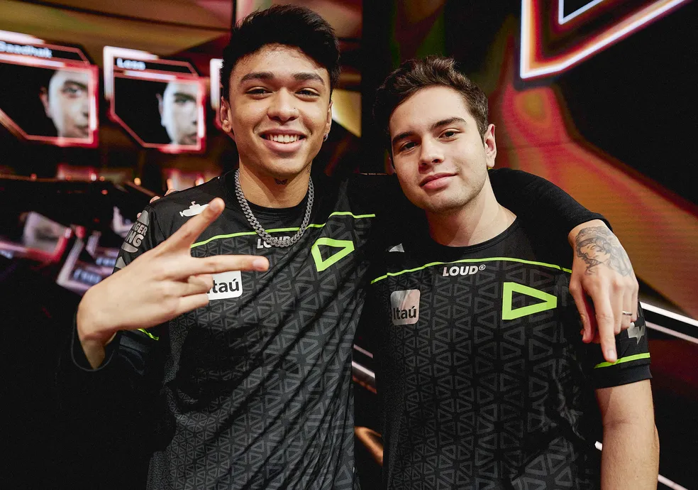

A trajetória da LOUD, time brasileiro finalista do mundial de Valorant
O Brasil é campeão mundial de Valorant! A LOUD venceu a OpTic por 3x1, levantando a taça do Valorant Champions 2022, sediado em Istanbul, na Turquia. A equipe afasta os fantasmas do passado, quando perderam a final do Masters Reykjavík 2022 para a mesma OpTic, e se colocam como o melhor time do mundo.
Pancada e Less após se consagrarem campeões mundiais - Foto: Riot Games
E não foi fácil, já que os brasileiros tiveram que buscar a virada na Ascent após a prorrogação. A Bind ficou para a OpTic, que empatou a série mostrando um jogo sólido no mapa. Já na Breeze, mais uma vez a tropa da LOUD teve que mostrar RESILIÊNCIA para virar a série, depois dominando a Haven e fechando a série da grande final.
CONFIRA MOMENTO EM QUE A EQUIPE SE CONSAGRA CAMPEÃ DO VALORANT CHAMPIONS!
SENHORAS E SENHORES, A GRANDE CAMPEÃ DO #VALORANTChampions: @LOUDgg! 🏆 pic.twitter.com/zfgdAC5gkC
— VALORANT Champions Tour Brazil (@valesports_br) 18 de setembro de 2022
Fazendo jus à decisão, o jogo teve mapas extremamente apertados, com um deles sendo decidido na
terceira prorrogação. Com o título, a LOUD leva a premiação total de US$ 300 mil (R$ 1,5
milhões) e chegam ao VCT 2023 como o time a ser batido.
A LOUD garantiu a série por 3x1, se tornando a segunda campeã mundial de VALORANT. Erick "aspas"
Santos foi eleito o MVP da final, consagrando a campanha excelente dos brasileiros na
competição.
A equipe também foi uma das mais populares do torneio e tem três dos cinco jogos com maior
audiência. Segundo levantamento feito pelo site Esports Charts, a partida entre LOUD e OpTic
válida pela final do VALORANT Champions 2022 contou com mais de 1,4 milhão de pico de audiência,
o maior número da história do VALORANT competitivo.
FAÇA SEU
CADASTRO
E JOGUE UM QUIZ
SOBRE SUA EQUIPE FAVORITA DE ESPORTS!
clique aqui
Conhecendo um pouco mais a Equipe
Com jogadores vindo de equipes experientes como Team VikingS. A LOUD conta com seu elenco Sacy,
Saadhak, Aspas, Pancada, Less e seu técnico BZKA.
A mescla de jogadores com passagens por
diferentes equipes se mostrou um enorme acerto logo de cara, ainda que a organização tenha demorado
um pouco para fazer o anúncio oficial da lineup. Usando a tag Pancada e Amigos, o quinteto confirmou
com enorme facilidade a classificação para VCT BR, fazendo dos classificatórios um mero protocolo
para conquistar a vaga.
Elenco unido após vitória sobre a opTic - Foto: Riot Games

Bryan 'Pancada' Luna
Idade: 23 anos
Nacionalidade: Brasileira
Sobre: Ex-Jogador de Crossfire, bryan mais conhecido como pancadA se aventurou no valorant, e vem se destacando cada vez mais. Chamou a atenção da organização por possuir experiência em campeonatos internacionais e ter uma ótima mira, se não a melhor do cenário. Decisivo e calculista, pancada foi essencial em muitos mapas para trazer o título para a LOUD. Utilizando os agentes Omen e Astra, bryan foi eleito pela riot o melhor jogador do campeonato.
Erick 'Aspas' Santos
Idade: 19 anos
Nacionalidade: Brasileira
Sobre: Sem sombra de dúvidas, Erick, mais conhecido como aspas, é o terror de todos os players que enfrentam a LOUD, conhecido por suas incriveis jogadas, aspas utiliza 100% da capacidade de seus agentes preferidos que são a jett e a raze.
O próprio jogador antes de entrar para o elenco, era considerado por muitas pessoas do cenário como trapaceiro, ou seja, utilizava programas terceiros para se destacar. Porém, Erick demonstrou ao público o seu íncrivel dom ao entrar para a LOUD. Recentemente, aspas foi premiado por conter a melhor jogada do ano.


Gustavo 'Sacy' Rossi
Idade: 24 anos
Nacionalidade: Brasileira
Sobre: Gustavo, mais conhecido como Sacy, sem dúvidas é o jogador mais experiênte da equipe, vindo do League of Legends, o jogador demonstrou ser o melhor iniciador do cenário brasileiro, utilizando o agente Sova, sacy se destaca pela capacidade e inteligência de encontrar seus inimigos e limpar muito bem as áreas para que seu time domine espaço. E graças a essas caracteristicas, o mesmo não pode ficar de fora da superLOUD.
Matias 'Saadhak' Delipetro
Idade: 25 anos
Nacionalidade: Argentino
Sobre: Após tomar uma decisão difícil em sair de seu país nativo. Matias, mais conhecido como saadhak, se consagra campeão mundial pela LOUD e dedica seu titulo a sua querida mãe que estava doente quando o mesmo viajou para o brasil, mas mesmo sobre essas dificuldades a mãe o apoiou desde sempre em suas decisões.
Seu agente mais utilizado foi o KAI/O, e o mesmo possui a classe de Iniciador, muito conhecido por suas pop flash's, foi essencial em muitas partidas para controlar e iniciar muitas jogadas para seu time.


Felipe 'Less' Basso
Idade: 17 anos
Nacionalidade: Brasileira
Sobre: Muito conhecido nas rankeadas brasileiras, Less é o nickname que Felipe Basso escolheu para se identificar. O jovem se destaca não só pela idade, mas sim por ser muito inteligente e analista dentro das partidas, utilizando agentes como Viper e Chamber, o garoto demonstra ser uma grande pedra no caminho de seus inimigos por ser o lurker perfeito que todos os times sonham em ter. Less domina a arte do controlador, e além disso possui uma mira absurda que é o essencial para a poderosa LOUD.
Matheus 'bzkA' Tarasconi
Idade: 27 anos
Nacionalidade: Brasileira
Sobre: Portador de deficiência, Matheus mais conhecido como bzkA é o primeiro coach PCD a ser campeão mundial.
Segundo bzkA, ele se orgulha muito do esforço de seu time e o desempenho que os mesmos
tiveram para obter o título. E ressalta que no mundo do E-Sports não importa sua limitação
física, porque é uma comunidade que abre espaço para todos.

E qual a lição que fica da LOUD?
Foi a união e o profissionalismo que levou essa organização tão longe. Desde o suporte necessário, até os cuidados com saúde, comprometimento e rotina de treinos.
A Loud nos mostrou o que é preciso para que o cenário brasileiro cresça: Jogadores dedicados, determinados e uma boa equipe para mantê-los motivados a vencer!
Cuidar dos jogadores, da sua saúde física e mental e proporcionar um ambiente adequado para sua evolução como profissional é o mínimo que as organizações brasileiras poderiam propor. Para que assim seja possível elevar o patamar do nosso cenário.